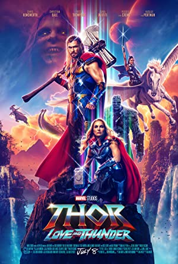
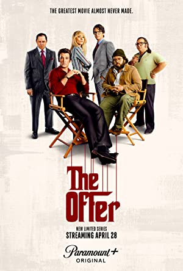
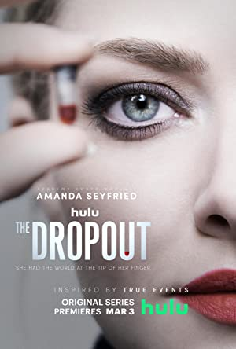

Get Extensive Details About Movies and Series from 150+ Streaming Platforms
Title : The Mask Type : movie Genre : Action, Comedy, Crime Release date : 29 Jul 1994 Rated : PG-13 Duration : 101 min Director(s) : Chuck Russell Writer(s) : Michael Fallon, Mark Verheiden, Mike Werb Actors : Jim Carrey, Cameron Diaz, Peter Riegert Plot : Awards : Ratings :
IMDB - IMDB - 6.9/10 Rotten Tomatoes - 80% Metacritic - 56/100
Best Movies of 2022
Title : The Batman Type : movie Genre : Action, Crime, Drama Release date : 4 Mar 2022 Rated : PG-13 Duration : 176 min Director(s) : Matt Reeves Writer(s) : Matt Reeves, Peter Craig, Bob Kane Actors : Robert Pattisson, Zoe Kravitz, Jeffrey Wright Plot : Awards : Ratings :
IMDB - IMDB - 7.9/10 Rotten Tomatoes - 85% Metacritic - 72/100
Title : Top Gun: Maverick Type : movie Genre : Action, Drama Release date : 27 May 2022 Rated : PG-13 Duration : 130 min Director(s) : Joseph Kosinski Writer(s) : Jim Cash, Jack Epps Jr., Peter Craig Actors : Tom Cruise, Jeniffer Connely, Miles Teller Plot : Awards : Ratings :
IMDB - IMDB - 8.5/10 Rotten Tomatoes - 96% Metacritic - 78/100
Title : The Northman Type : movie Genre : Action, Adventure, Drama Release date : 22 Apr 2022 Rated : R Duration : 137 min Director(s) : Robert Eggers Writer(s) : Sjon, Robert Eggers Actors : Alexander Skarsgard, Nicole Kidman, Claes Bang Plot : Awards : Ratings :
IMDB - IMDB - 7.2/10 Rotten Tomatoes - 89% Metacritic - 82/100
Title : Doctor Strange In The Multiverse Of Madness Type : movie Genre : Action, Adventure, Fantasy Release date : 06 May 2022 Rated : PG-13 Duration : 126 min Director(s) : Sam Raimi Writer(s) : Michael Waldron, Stan Lee, Steve Ditko Actors : Benedict Cumberbatch, Elizabeth Olsen, Chiwetel Ejiofor Plot : Awards : Ratings :
IMDB - IMDB - 7/10 Rotten Tomatoes - 74% Metacritic - 60/100

Title : Thor: Love and Thunder Type : movie Genre : Action, Adventure, Comedy Release date : 08 Jul 2022 Rated : PG-13 Duration : 118 min Director(s) : Taika Waititi Writer(s) : Taika Waititi, Jeniffer Kaytin Robinson, Stan Lee Actors : Chris Hemsworth, Natalie Portman, Christian Bale Plot : Awards : Ratings :
IMDB - IMDB - 6.7/10 Rotten Tomatoes - 65% Metacritic - 57/100
Title : Jurassic World Dominion Type : movie Genre : Action, Adventure, Sci-Fi Release date : 10 Jun 2022 Rated : PG-13 Duration : 147 min Director(s) : Collin Trevorrow Writer(s) : Emily Charmichael, Colin Trevorrow, Derek Connolly Actors : Chris Pratt, Bryce Dallas Howard, Laura Dern Plot : Awards : Ratings :
IMDB - IMDB - 5.7/10 Rotten Tomatoes - 29% Metacritic - 38/100
Best Series of 2022
Title : Black Bird Type : series Genre : Crime, Drama, Mystery Year : 2022 Rated : TV-MA Writer(s) : Dennis lehane Actors : Taron Egerton, Paul Walter Hauser, Greg Kinnear Ratings : IMDB - 8.2/10 Plot : Awards :

Title : The Offer Type : series Genre : Biography, Drama Year : 2022 Rated : TV-MA Writer(s) : Leslie greif, Michael Tolkin Actors : Miles teller, Matthew Goode, Dan Fogler Ratings : IMDB - 8.7/10 Plot : Awards :
Title : Tokyo Vice Type : series Genre : Crime, Drama, Thriller Year : 2022 Rated : TV-MA Writer(s) : Jake Adelstein (based on the book by), J.T. Roger (screenplay) Actors : Ansel Elgort, Ken Watanabe, Rachel Keller Ratings : IMDB - 8.0/10 Plot : Awards :
Title : The Terminal List Type : series Genre : Action, Drama, Thriller Year : 2022- Rated : TV-MA Writer(s) : N/A Actors : Chriss Pratt, Constance Wu, Taylor Kitsch Ratings : IMDB - 8.0/10 Plot : Awards :
Title : Man VS. Bee Type : series Genre : Short, Comedy, Family Year : 2022- Rated : TV-PG Writer(s) : Rowan Atkinson, Will Davies Actors : Rowan Atkinson, Pino Maiello, Claudie Blakley Ratings : IMDB - 6.8/10 Plot : Awards :

Title : The Dropout Type : series Genre : Biography, Drama Year : 2022 Rated : TV-MA Writer(s) : Elizabeth Meriwether Actors : Amanda Seyfried, Neveen Andrews, Michel Gill Ratings : IMDB - 7.5/10 Plot : Awards :
Best Animations of 2022
Title : The Legend Of Vox Machina Type : series Genre : Animation, Action, Adventure Year : 2022- Rated : TV-MA Writer(s) : N/A Actors : Laura Bailey, Taliesin Jaffe, Ashley Johnson Ratings : IMDB - 8.4/10 Plot : Awards :
Title : Turning Red Type : movie Genre : Animation, Adventure, Comedy Release date : 11 Mar 2022 Rated : PG Duration : 100 min Director(s) : Domee Shi Writer(s) : Domee Shi, Julia Cho, Sarah Streicher Actors : Rosalie Chiang, Sandra Oh, Ava Morse Plot : Awards : Ratings :
IMDB - IMDB - 7.0/10 Rotten Tomatoes - 95% Metacritic - 83/100
Title : Sonic The Hedgehog 2 Type : movie Genre : Action, Adventure, Comedy Release date : 08 Apr 2022 Rated : PG Duration : 122 min Director(s) : Jeff Fowler Writer(s) : Pat Casey, Josh Miller, John Whittington Actors : James Marsden, Jim Carrey, Ben Schwartz Plot : Awards : Ratings :
IMDB - IMDB - 6.5/10 Rotten Tomatoes - 69% Metacritic - 47/100
Title : The Bad Guys Type : movie Genre : Animation, Adventure, Comedy Release date : 22 Apr 2022 Rated : PG Duration : 100 min Director(s) : Pierre Perifel Writer(s) : Aaron Blabey, Etan Cohen, Yoni Brenner Actors : Sam Rockwell, Marc Maron, Awkwafina Plot : Awards : Ratings :
IMDB - IMDB - 6.8/10 Rotten Tomatoes - 88% Metacritic - 64/100
Title : The Boys Presents: Diabolical Type : series Genre : Animation, Short, Action Year : 2022- Rated : TV-MA Writer(s) : N/A Actors : Grey Griffin, Chris Diamantopoulos, Ben Schwartz Ratings : IMDB - 6.9/10 Plot : Awards :
Title : DC League Of Super-Pets Type : movie Genre : Animation, Action, Adventure Release date : 29 Jul 2022 Rated : PG Duration : 106 min Director(s) : Jared Stern, Sam J. Levine Writer(s) : Jared Stern, John Whittington Actors : Dwayne Johnson, Kevin Hart, Kate McKinnon Plot : Awards : Ratings :
IMDB - IMDB - 7.5/10 Rotten Tomatoes - 73% Metacritic - 56/100
Others(Recommended)
Title : Casino Royale Type : movie Genre : Action, Adventure, Thriller Release date : 17 Nov 2006 Rated : PG-13 Duration : 144 min Director(s) : Martin Campbell Writer(s) : Neal Purvis, Robert Wade, Paul Haggis Actors : Daniel Craig, Eva Green, Judi Dench Plot : Awards : Ratings :
IMDB - IMDB - 8.0/10 Rotten Tomatoes - 94% Metacritic - 80/100
Title : 300 Type : movie Genre : Action, Drama Release date : 09 Mar 2007 Rated : R Duration : 117 min Director(s) : Zack Snyder Writer(s) : Zack Snyder, Kurt Johnstand, Michael B. Gordon Actors : JGerard Butler, Lena Headey, David Wenham Plot : Awards : Ratings :
IMDB - IMDB - 7.6/10 Rotten Tomatoes - 61% Metacritic - 52/100
Title : Mad Max: Fury Road Type : movie Genre : Action, Adventure, Sci-Fi Release date : 15 May 2015 Rated : R Duration : 120 min Director(s) : George Miller Writer(s) : George Miller, Brendan McCarthy, Nick Lathouris Actors : Tom Hardy, Charlize Theron, Nicholas Hoult Plot : Awards : Ratings :
IMDB - IMDB - 8.1/10 Rotten Tomatoes - 97% Metacritic - 90/100
Title : Game Of Thrones Type : Series Genre : Action, Adventure, Drama Year : 2011-2019 Rated : TV-MA Writer(s) : David Bennioff, D.B. Weiss Actors : Emilia Clarke, Peter Dinklage, Kit Harington Ratings : IMDB - 9.2/10 Plot : Awards :
Title : Rick And Morty Type : Series Genre : Animation, Adventure, Comedy Year : 2013- Rated : TV-MA Writer(s) : Dan Harmon, Justin Rolland Actors : Justin Rolland, Chris parnell, Spencer Grammer Ratings : IMDB - 9.2/10 Plot : Awards :
Title : Peaky Blinders Type : Series Genre : Crime, Drama Year : 2013-2022 Rated : TV-MA Writer(s) : Steven Knight Actors : Cillian Murphy, Paul Anderson, Sophie Rundle Ratings : IMDB - 8.8/10 Plot : Awards :


comments